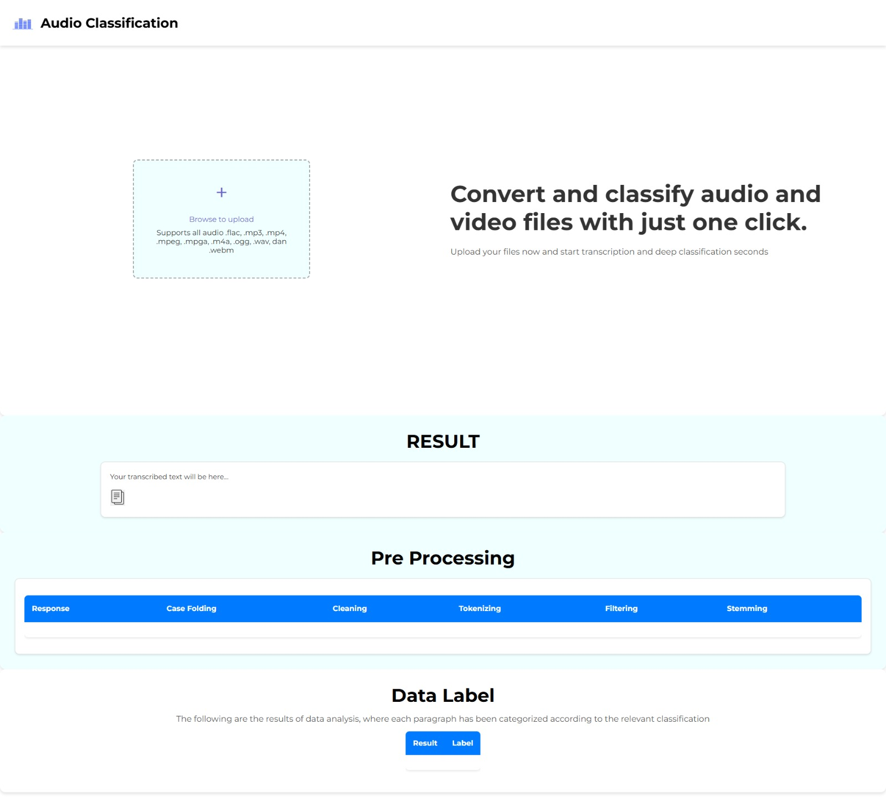

My Works
Featured Portfolio


I am a Bachelor of Informatics graduate from Institut Teknologi Nasional with expertise in leadership, communication, and adaptability in new environments. I have a deep understanding of information technology, project management, and data analysis, and I am always committed to delivering the best results in every task I undertake.
I have experience in preparing learning modules for one semester, delivering materials related to Cisco applications, operating systems, and Mikrotik, as well as designing assignments and exam questions for students. Additionally, I prepared AutoCAD materials and reported students' grades to lecturers and the head of the laboratory.
I design website layouts, including the selection of colors, fonts, layouts, and icons that align with the goals and needs of users. I also create website mockups and simulate features using tools like Figma and Adobe XD. For implementation, I use programming languages such as HTML, CSS, PHP, and JavaScript.
I have experience in using SQL databases, including designing and managing database structures, performing queries to retrieve and manipulate data, as well as optimizing database performance to support efficient and scalable applications.
IT Support
Front End Web
Multimedi Lab Asistant
I have expertise in various programming languages, including front-end development, as well as data analysis and machine learning. With experience in building efficient and user-friendly systems, I can develop interactive, responsive, and high-performance applications tailored to user needs.
Bandung City, West Java
+6289527056776
mohammadgilangg10@gmail.com